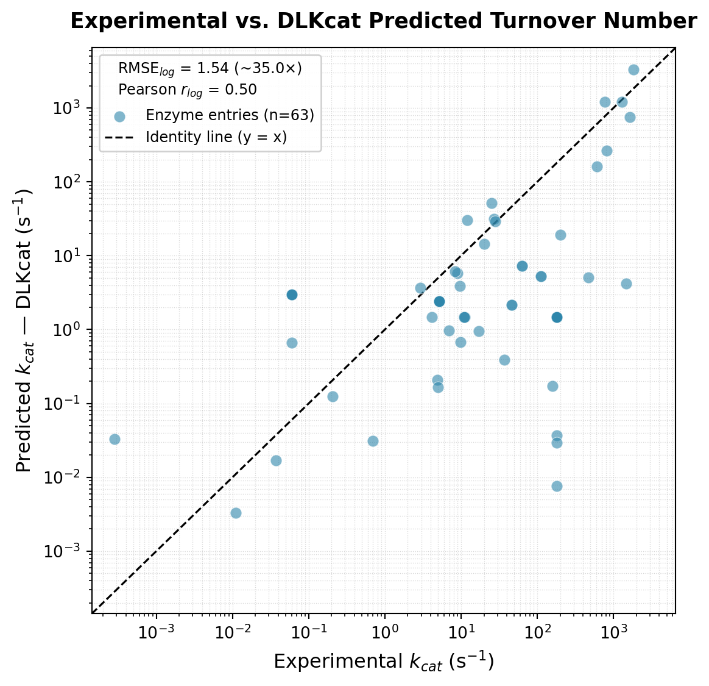
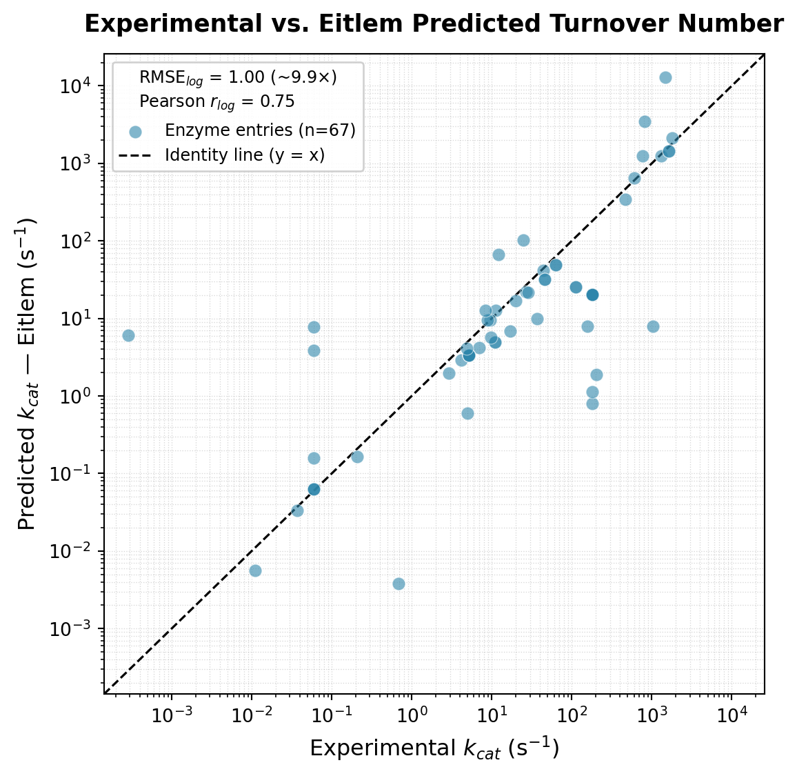
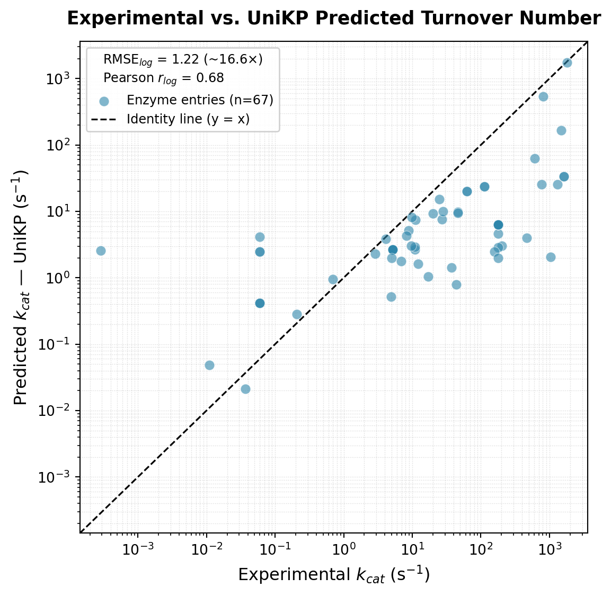

import pandas as pd
import numpy as np
import matplotlib.pyplot as plt
import matplotlib.ticker as ticker
kcat_yeast = pd.read_csv("prediction/kcat_retrieved.tsv", sep="\t")
kcat_best = kcat_yeast[kcat_yeast['penalty_score'] <= 0]
kcat_best.to_csv("prediction/kcat_exp.tsv", sep="\t")
# Header
# ,fasta_id,smiles,pred_log10[kcat(s^-1)],pred_log10[Km(mM)],pred_log10[kcat/Km(s^-1mM^-1)]
dlkcat = pd.read_csv("prediction/dlkcat/dlkcat_output.csv", index_col=0, sep=",")
eitlem = pd.read_csv("prediction/eitlem/eitlem_output.csv", index_col=0, sep=",")
unikp = pd.read_csv("prediction/unikp/unikp_output.csv", index_col=0, sep=",")
def format_output(df, output_path):
new_df = pd.DataFrame()
# Rename / map columns
new_df["fasta_id"] = df["Enzyme_id"] + "_" + df["type"]
new_df["smiles"] = df["smiles"]
# Convert kcat to log10
new_df["pred_log10[kcat(s^-1)]"] = np.log10(df["kcat"])
new_df = pd.DataFrame({
"fasta_id": new_df["fasta_id"],
"smiles": new_df["smiles"],
"pred_log10[kcat(s^-1)]": new_df["pred_log10[kcat(s^-1)]"],
"pred_log10[Km(mM)]": 1,
"pred_log10[kcat/Km(s^-1mM^-1)]": 1
})
new_df.to_csv(output_path, index=True, sep=",")
format_output(dlkcat, "prediction/dlkcat/dlkcat_output_formatted.csv")
format_output(eitlem, "prediction/eitlem/eitlem_output_formatted.csv")
format_output(unikp, "prediction/unikp/unikp_output_formatted.csv")
exp = pd.read_csv("prediction/kcat_exp.tsv", sep="\t")
dlkcat = pd.read_csv("prediction/dlkcat/dlkcat.tsv", sep="\t")
dlkcat = dlkcat[dlkcat['db'] == 'catapro']
eitlem = pd.read_csv("prediction/eitlem/eitlem.tsv", sep="\t")
eitlem = eitlem[eitlem['db'] == 'catapro']
unikp = pd.read_csv("prediction/unikp/unikp.tsv", sep="\t")
unikp = unikp[unikp['db'] == 'catapro']
# Merge the two df with exp and dlkcat
# Select the key columns to merge on (adjust if needed)
merge_cols = [
"rxn", "rxn_kegg", "ec_code", "direction",
"substrates_kegg", "products_kegg", "uniprot"
]
# Keep only relevant columns + rename kcat
exp_sub = exp[merge_cols + ["kcat"]].rename(columns={"kcat": "kcat_sabio"})
dlkcat_sub = dlkcat[merge_cols + ["kcat"]].rename(columns={"kcat": "kcat_catapro"})
eitlem_sub = eitlem[merge_cols + ["kcat"]].rename(columns={"kcat": "kcat_catapro"})
unikp_sub = unikp[merge_cols + ["kcat"]].rename(columns={"kcat": "kcat_catapro"})
merged = pd.merge(exp_sub, dlkcat_sub, on=merge_cols, how="outer")
merged_eitlem = pd.merge(exp_sub, eitlem_sub, on=merge_cols, how="outer")
merged_unikp = pd.merge(exp_sub, unikp_sub, on=merge_cols, how="outer")kcat Prediction in Yeast-GEM is not that bad and the models gives different results
In this study, we evaluate the performance of three machine learning models—DLKcat, Eitlem, and UniKP—for the prediction of enzymatic turnover numbers (kcat) in yeast. The primary objective is to assess the extent to which these models reproduce experimentally measured values.
Motivation
This analysis was conducted in response to poster #XX (“XXX”), which asserts that kcat prediction models are unreliable and yield indistinguishable results between models. I identify several conceptual limitations in that assessment. In particular, the comparison of model predictions against experimental data obtained under non-physiological conditions or for mutant enzymes is not consistent with the intended scope of these models. Such models are typically trained on wild-type enzymes under physiologically relevant conditions and should be evaluated accordingly.
Data preprocessing
Experimentally derived kcat values were first retrieved and subsequently filtered to retain only high-confidence entries. Specifically, we restricted the dataset to measurements corresponding to wild-type enzymes under physiological conditions (temperature: 18–38°C; pH: 4–8). This filtering step ensures that the evaluation is performed on reliable data and within the domain for which the models are expected to be valid.
Following this preprocessing, only a limited number of kcat measurements (n = 72) were available for the Yeast-GEM model under physiological conditions. This observation highlights the scarcity of high-quality experimental data in this domain and underscores the importance of predictive models to complement existing datasets.
In parallel, predictions from the three models (DLKcat, Eitlem, and UniKP), implemented via KineticsPredictor, were generated for the curated set of experimental measurements.
Evaluation metrics
Model performance was assessed on the log10 scale using the root mean squared error (RMSE), which quantifies the average magnitude of prediction error while penalizing larger deviations more strongly.
To facilitate interpretation in a biochemical context, errors were additionally expressed as fold deviations (e.g., an RMSE of 1 on the log10 scale corresponds to an approximate 10-fold error).
The Pearson correlation coefficient was also computed on the log10-transformed values to evaluate the strength of the linear relationship between predicted and experimental kcat values. However, the relevance of this metric should be interpreted with caution, as the assumption of a strictly linear relationship between predicted and measured values may not be fully justified in this context.
# Dlkcat
# Drop rows where one of the kcat values is missing
plot_df = merged.dropna(subset=["kcat_sabio", "kcat_catapro"])
# --- Metrics on log10 scale ---
log_exp = np.log10(plot_df["kcat_sabio"])
log_pred = np.log10(plot_df["kcat_catapro"])
rmse = np.sqrt(np.mean((log_pred - log_exp) ** 2)) # in log10 units
mae = np.mean(np.abs(log_pred - log_exp)) # mean absolute log10 error
pearson_log = log_exp.corr(log_pred) # correlation on log scale (more meaningful)
print(f"RMSE (log10): {rmse:.3f} (~{10**rmse:.1f}x average error)")
print(f"MAE (log10): {mae:.3f} (~{10**mae:.1f}x average error)")
print(f"Pearson r (log10): {pearson_log:.3f}")
# --- Plot ---
fig, ax = plt.subplots(figsize=(6, 6))
ax.scatter(
plot_df["kcat_sabio"],
plot_df["kcat_catapro"],
alpha=0.6,
edgecolors="white",
linewidths=0.4,
s=50,
color="#2E86AB",
label=f"Enzyme entries (n={len(plot_df)})",
zorder=3,
)
# Identity line
combined = pd.concat([plot_df["kcat_sabio"], plot_df["kcat_catapro"]])
lim_min = combined.min() * 0.5
lim_max = combined.max() * 2
ax.plot([lim_min, lim_max], [lim_min, lim_max],
color="black", linewidth=1.2, linestyle="--",
label="Identity line (y = x)", zorder=2)
# --- Axis limits & scale ---
ax.set_xscale("log")
ax.set_yscale("log")
ax.set_xlim(lim_min, lim_max)
ax.set_ylim(lim_min, lim_max)
# --- Labels & title ---
ax.set_xlabel("Experimental $k_{cat}$ (s$^{-1}$)", fontsize=12)
ax.set_ylabel("Predicted $k_{cat}$ — DLKcat (s$^{-1}$)", fontsize=12)
ax.set_title("Experimental vs. DLKcat Predicted Turnover Number",
fontsize=13, fontweight="bold", pad=12)
# --- Legend with log-scale metrics ---
legend_title = (
f"RMSE$_{{log}}$ = {rmse:.2f} (~{10**rmse:.1f}×)\n"
f"Pearson $r_{{log}}$ = {pearson_log:.2f}"
)
ax.legend(
title=legend_title,
title_fontsize=9,
fontsize=9,
framealpha=0.9,
edgecolor="#cccccc",
loc="upper left",
)
ax.grid(True, which="both", linestyle=":", linewidth=0.5, alpha=0.5)
ax.set_axisbelow(True)
plt.tight_layout()
plt.show()RMSE (log10): 1.544 (~35.0x average error)
MAE (log10): 1.197 (~15.7x average error)
Pearson r (log10): 0.501
# Eitlem
# Drop rows where one of the kcat values is missing
plot_df = merged_eitlem.dropna(subset=["kcat_sabio", "kcat_catapro"])
# --- Metrics on log10 scale ---
log_exp = np.log10(plot_df["kcat_sabio"])
log_pred = np.log10(plot_df["kcat_catapro"])
rmse = np.sqrt(np.mean((log_pred - log_exp) ** 2)) # in log10 units
mae = np.mean(np.abs(log_pred - log_exp)) # mean absolute log10 error
pearson_log = log_exp.corr(log_pred) # correlation on log scale (more meaningful)
print(f"RMSE (log10): {rmse:.3f} (~{10**rmse:.1f}x average error)")
print(f"MAE (log10): {mae:.3f} (~{10**mae:.1f}x average error)")
print(f"Pearson r (log10): {pearson_log:.3f}")
# --- Plot ---
fig, ax = plt.subplots(figsize=(6, 6))
ax.scatter(
plot_df["kcat_sabio"],
plot_df["kcat_catapro"],
alpha=0.6,
edgecolors="white",
linewidths=0.4,
s=50,
color="#2E86AB",
label=f"Enzyme entries (n={len(plot_df)})",
zorder=3,
)
# Identity line
combined = pd.concat([plot_df["kcat_sabio"], plot_df["kcat_catapro"]])
lim_min = combined.min() * 0.5
lim_max = combined.max() * 2
ax.plot([lim_min, lim_max], [lim_min, lim_max],
color="black", linewidth=1.2, linestyle="--",
label="Identity line (y = x)", zorder=2)
# --- Axis limits & scale ---
ax.set_xscale("log")
ax.set_yscale("log")
ax.set_xlim(lim_min, lim_max)
ax.set_ylim(lim_min, lim_max)
# --- Labels & title ---
ax.set_xlabel("Experimental $k_{cat}$ (s$^{-1}$)", fontsize=12)
ax.set_ylabel("Predicted $k_{cat}$ — Eitlem (s$^{-1}$)", fontsize=12)
ax.set_title("Experimental vs. Eitlem Predicted Turnover Number",
fontsize=13, fontweight="bold", pad=12)
# --- Legend with log-scale metrics ---
legend_title = (
f"RMSE$_{{log}}$ = {rmse:.2f} (~{10**rmse:.1f}×)\n"
f"Pearson $r_{{log}}$ = {pearson_log:.2f}"
)
ax.legend(
title=legend_title,
title_fontsize=9,
fontsize=9,
framealpha=0.9,
edgecolor="#cccccc",
loc="upper left",
)
ax.grid(True, which="both", linestyle=":", linewidth=0.5, alpha=0.5)
ax.set_axisbelow(True)
plt.tight_layout()
plt.show()RMSE (log10): 0.997 (~9.9x average error)
MAE (log10): 0.617 (~4.1x average error)
Pearson r (log10): 0.748
# eitlem
# Drop rows where one of the kcat values is missing
plot_df = merged_unikp.dropna(subset=["kcat_sabio", "kcat_catapro"])
# --- Metrics on log10 scale ---
log_exp = np.log10(plot_df["kcat_sabio"])
log_pred = np.log10(plot_df["kcat_catapro"])
rmse = np.sqrt(np.mean((log_pred - log_exp) ** 2)) # in log10 units
mae = np.mean(np.abs(log_pred - log_exp)) # mean absolute log10 error
pearson_log = log_exp.corr(log_pred) # correlation on log scale (more meaningful)
print(f"RMSE (log10): {rmse:.3f} (~{10**rmse:.1f}x average error)")
print(f"MAE (log10): {mae:.3f} (~{10**mae:.1f}x average error)")
print(f"Pearson r (log10): {pearson_log:.3f}")
# --- Plot ---
fig, ax = plt.subplots(figsize=(6, 6))
ax.scatter(
plot_df["kcat_sabio"],
plot_df["kcat_catapro"],
alpha=0.6,
edgecolors="white",
linewidths=0.4,
s=50,
color="#2E86AB",
label=f"Enzyme entries (n={len(plot_df)})",
zorder=3,
)
# Identity line
combined = pd.concat([plot_df["kcat_sabio"], plot_df["kcat_catapro"]])
lim_min = combined.min() * 0.5
lim_max = combined.max() * 2
ax.plot([lim_min, lim_max], [lim_min, lim_max],
color="black", linewidth=1.2, linestyle="--",
label="Identity line (y = x)", zorder=2)
# --- Axis limits & scale ---
ax.set_xscale("log")
ax.set_yscale("log")
ax.set_xlim(lim_min, lim_max)
ax.set_ylim(lim_min, lim_max)
# --- Labels & title ---
ax.set_xlabel("Experimental $k_{cat}$ (s$^{-1}$)", fontsize=12)
ax.set_ylabel("Predicted $k_{cat}$ — UniKP (s$^{-1}$)", fontsize=12)
ax.set_title("Experimental vs. UniKP Predicted Turnover Number",
fontsize=13, fontweight="bold", pad=12)
# --- Legend with log-scale metrics ---
legend_title = (
f"RMSE$_{{log}}$ = {rmse:.2f} (~{10**rmse:.1f}×)\n"
f"Pearson $r_{{log}}$ = {pearson_log:.2f}"
)
ax.legend(
title=legend_title,
title_fontsize=9,
fontsize=9,
framealpha=0.9,
edgecolor="#cccccc",
loc="upper left",
)
ax.grid(True, which="both", linestyle=":", linewidth=0.5, alpha=0.5)
ax.set_axisbelow(True)
plt.tight_layout()
plt.show()RMSE (log10): 1.220 (~16.6x average error)
MAE (log10): 0.971 (~9.3x average error)
Pearson r (log10): 0.680
Conclusion
Overall, the results indicate that kcat prediction is achievable at the order-of-magnitude level. However, model selection has a substantial impact on predictive performance. Even the best-performing model exhibits errors spanning multiple fold differences, reflecting the intrinsic complexity of enzyme kinetics and the limitations of current predictive approaches. These findings emphasize the need for careful interpretation when applying such models in downstream analyses.